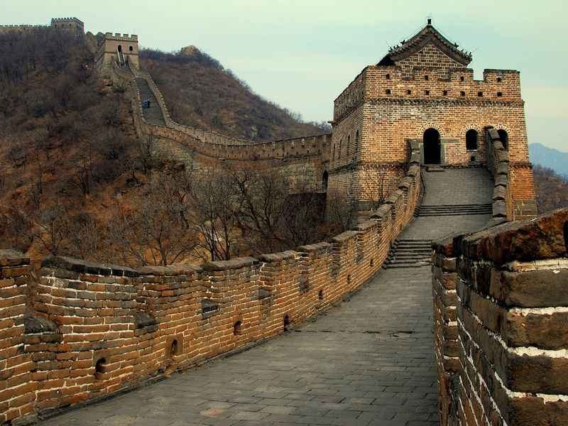
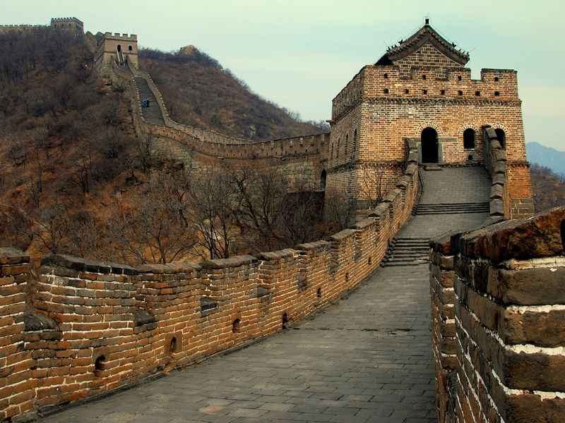

Location & Architecture
Images from Avatar
The Asian Inspiration
The location in relation to other nations and immense size of the Earth Kingdom is reminiscent of modern-day China. The Si Wong desert in the Earth Kingdom is similar to the Gobi desert in northern China.
The architecture of the Earth Kingdom Palace (pictured to the right) is similar to that of the meridian gate to the Forbidden City in Beijing, China, the largest imperial palace in the world. The impenetrable wall of Ba Sing Se is perhaps the most obvious reference to Asian culture throughout Avatar; the walls surrounding Ba Sing Se are modeled after the ancient Great Wall of China.
Kyoshi Island, an island located off the southern coast of the Earth Kingdom, is likely a reference to Taiwan in that the island had been separated from the mainland and now remains a mostly independent entity. The architecture of Kyoshi Island mostly resembles Japanese architecture.

 
